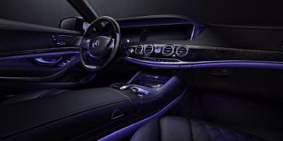
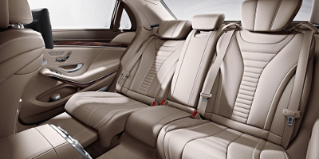

Design
Elegant, in everything it does.
For generations, an S-Class Sedan has been instantly recognizable not just for its iconic design, but for predicting the future of the automobile. Strong, powerful and majestic, it's also sleek, lithe and the most athletic S-Class yet. It slips through the wind with quiet ease, yet stands out in any crowd. In fact, it stands above.

Enlightened, without a single lightbulb.
Intricate, intimate and impeccable, the S-Class cabin is a celebration of time-honored handcraftsmanship. Virtually every surface is richly upholstered, precisely tailored, and swathed in sweeping spans of fine wood. Along with an extensive palette of trim options, nearly 300 LEDs let you set the cabin aglow in any of seven variable hues.

Rejuvenating, in a most relaxing way.
Every element of S-Class comfort is designed to soothe and stimulate the senses. The cabin air can be double-filtered, ionized, and infused by an innovative aromatherapy system, all standard. Armrests and doors can be heated. Seats can offer a "hot stone" massage. And with four available configurations, the rear cabin is even more inviting.